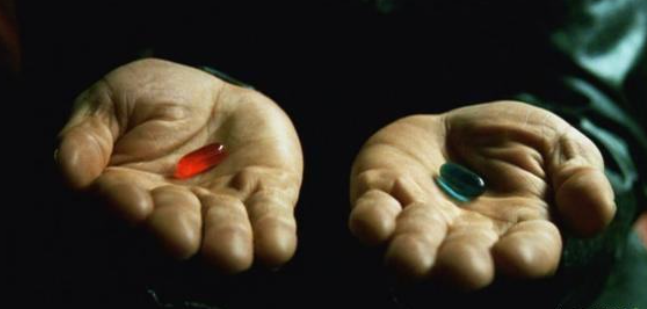

一到选择就会让我想起了《黑客帝国》里墨菲斯给尼欧的红色药丸和蓝色药丸，当时看这个电影觉得好扯，聊天前先让人家吞药丸；如果尼欧选择吃下蓝色药丸，就会忘记墨菲斯所说的一切，回到充满谎言的虚拟世界；如果吃下了红色药丸，到来的将会是残酷的现实世界。(⊙﹏⊙)
你是选择做股票还是做模式？
其实如果你选择做股票到此止步，前面讲的很多技术足够你掌握使用了，后面部分可能对你不会有任何帮助；
如果你选择做模式，请继续向下学习。
模式分解大类只有两种：追涨和低吸
追涨小类：主升浪追买，涨停打板，平台整理突破，突破前高，阴线吞噬
低吸小类：龙头低吸，日内低吸，回调浪低吸，底背离低吸，底部形态
你选择了大类就要去小类着手练习，这就是模式化分解，把一招练习精通。只做自己熟悉模式的股票，其它涨的再好，没有出手点就不参与。
关于小类的详细学习，关注微信公共号：抢财猫，留言咨询波哥。
当然最直接的办法就是打赏入群学习